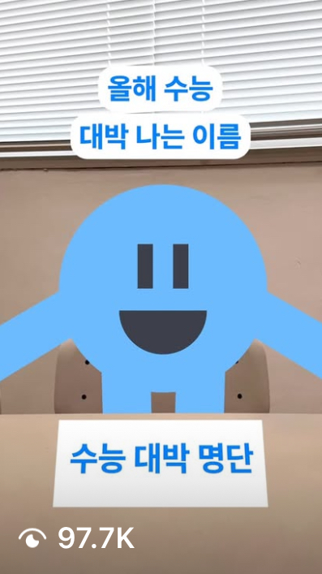
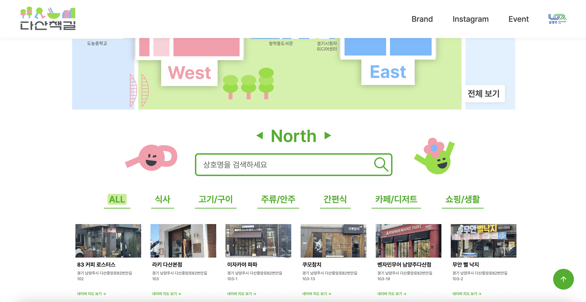

Overview
I interned as a marketer and brand manager at a branding and marketing agency and led a local business marketing project in partnership with a city hall.
The objective was not only to increase district-level awareness, but to turn awareness into real visits, participation, and sales opportunities. To solve this, I built an integrated campaign that connected Instagram content, a campaign landing page, and offline pop-up activations into one coherent customer journey.
Rather than treating content, information, and events as separate tasks, I designed them as linked conversion touchpoints so online interest could move naturally into offline action.
Challenge
Store marketing across the district was highly fragmented, with each business promoting independently, which diluted the message and made it difficult for awareness to turn into real visits.
The project also needed to satisfy multiple goals at once—sales growth, street activation, and brand awareness—making it insufficient to rely on a single channel or one-off event.
The real problem was not a lack of promotion, but a weak journey from exposure to attendance. People could discover the campaign, but there was no strong, seamless path that turned curiosity into participation.
Insight → Idea
Insight
Awareness alone does not drive visits. People act when they have both a clear reason to go and a frictionless path to participate.
In this project, information was fragmented across touchpoints, causing users to drop off before taking action. To increase real foot traffic, the campaign needed to connect discovery, information, and participation into one continuous experience.
Idea
Turn fragmented awareness into real visits by designing one seamless journey—from content discovery to on-site participation.
Strategy
Conversion-First Journey Design
I structured the campaign as a conversion system, aligning content, information, and offline experience into a single journey that reduces friction and guides users from exposure to participation.
Audience-Led Message Planning
I designed the campaign around the 20s–40s audience, focusing on what would make the district feel worth visiting rather than simply worth noticing. This translated district strengths into clear visit motivations and aligned content, messaging, and activation accordingly.
Online-to-Offline Integration
I used content as the entry point to offline action, connecting Instagram content, a landing page, and pop-up events into a unified experience that moves users from discovery to participation.
Workflow
Research
Conducted field and stakeholder research, including interviews with 70+ store owners, to identify real business needs and audience context.
Insight
Diagnosed the core gap as awareness not converting into visits and identified the need for a conversion-driven journey design.
Promotion & Creative
Designed an audience-led campaign flow and produced Instagram content that aligned messaging, visuals, and participation cues across touchpoints.
Activation & Conversion
Executed offline pop-up events and built a campaign landing page to centralize information and drive participation, refining execution based on real performance signals.
Execution
Research & Opportunity Framing
- Interviewed 70+ store owners to identify business needs and reframed the problem as a visit-conversion challenge
- Synthesized field insights into a clearer opportunity: not just increasing awareness, but turning awareness into real visits
Journey Design & Campaign Execution
- Designed an integrated customer journey connecting content, information, and offline experience
- Produced Instagram Reels and carousel content, achieving 97K+ organic views
- Developed a campaign landing page to reduce participation friction and guide users toward action
Offline Activation & Optimization
- Planned and executed offline pop-up events attracting 1,000+ visitors
- Optimized both content and operations based on actual visit-driving touchpoints, not just engagement metrics

Offline campaign

97.7K views on Instagram content

Marketing landing page
Impact & Results
Demonstrated the ability to transform fragmented local marketing into a conversion-driven campaign that connects digital engagement with real-world visits.